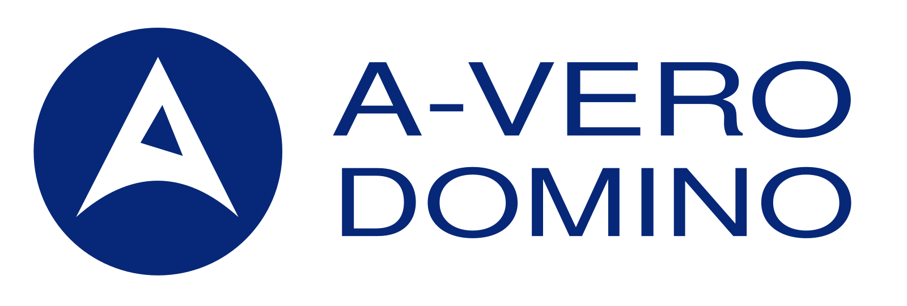
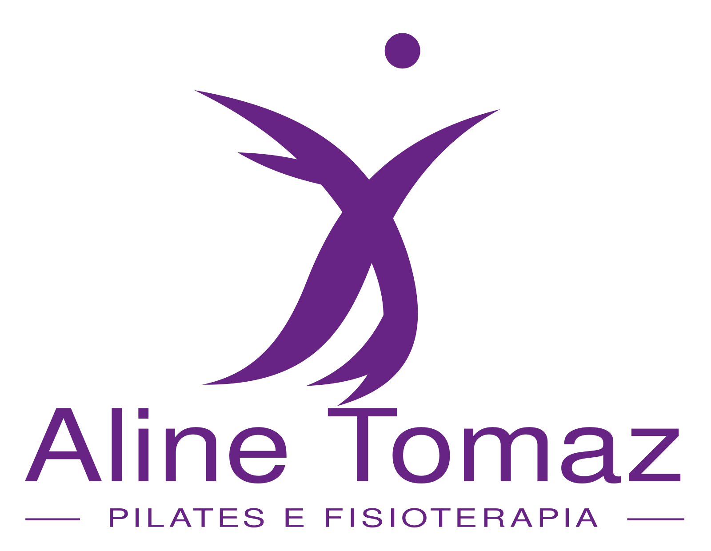

01 / TRÍADE
TRANSFORMANDO IDEIAS EM NEGÓCIOS
Soluções personalizadas
para você e sua empresa.
Soluções alinhadas ao perfil do seu negócio, com conhecimento, tecnologia e proximidade para apoiar o crescimento da sua empresa.
Desde 1995Transformando ideias
em negócios.
Explore os segmentos ↓em negócios.
CONFIANÇA É A BASE DE TUDO
Empresas de diferentes tamanhos e segmentos confiam na Tríade.


01 / PARA QUEM ATUAMOS
Ramos de atuação.
Cada segmento tem suas particularidades. A Tríade oferece soluções contábeis alinhadas à realidade e às necessidades do seu negócio.

02 / TRÍADE
Área médica
Saiba mais03 / TRÍADE
Salão parceiro
Saiba mais04 / TRÍADE
E-commerce
Saiba mais05 / TRÍADE
Serviços
Saiba mais06 / TRÍADE
Imobiliárias
Saiba mais07 / TRÍADE
Indústrias
Saiba maisProximidade para entender. Conhecimento para orientar.Explore os segmentos →
Marcelo da SilvaCRC: 021519/O-9Fundador · Consultor de negócios
02 / QUALIDADE TRÍADE
Transformando ideias
em negócios.
“Mais importante que gerenciar números e empresas é poder contribuir para o crescimento e o sucesso das pessoas.”
Há mais de 25 anos, a Tríade trabalha para oferecer soluções alinhadas às necessidades de cada empresa, com atenção ao bem-estar das pessoas e ao desenvolvimento dos negócios.
AmizadeGratidãoHumanismo
03 / PARCEIROS DE NEGÓCIOS
Parcerias que facilitam
o seu dia a dia.
Clique nos ícones flutuantes e busque soluções especializadas para o seu negócio
01
Sistemas de gestão financeira
Ferramentas para reunir informações de receitas, despesas e acompanhamento financeiro em uma rotina organizada.
Conhecer esta solução02
Certificado digital
Apoio para obter e utilizar a identidade digital nas operações e assinaturas que exigem certificação.
Conhecer esta solução03
Ponto digital
Soluções para registrar jornadas e disponibilizar informações que apoiam o acompanhamento da equipe.
Conhecer esta solução04
Consultoria para viabilização de negócios
Análise de ideias, estrutura e recursos necessários para transformar planos em uma operação viável.
Conhecer esta solução05
Assessoria jurídica PJ e PF
Encaminhamento a especialistas para demandas jurídicas empresariais e pessoais, conforme a necessidade.
Conhecer esta solução06
Assessoria empresarial
Apoio especializado para revisar processos, organizar prioridades e construir planos de desenvolvimento do negócio.
Conhecer esta solução07
Recrutamento e seleção de pessoas
Apoio na busca e seleção de profissionais compatíveis com as funções e a estrutura da empresa.
Conhecer esta solução08
Programa de saúde ocupacional
Encaminhamento das demandas de saúde e segurança ocupacional para profissionais especializados.
Conhecer esta solução09
Criação e fechamento de CNO — obras
Apoio especializado à organização cadastral e documental das obras, considerando suas características.
Conhecer esta solução10
Criação de websites
Desenvolvimento de presença digital com páginas que apresentam o negócio e facilitam o contato com seus clientes.
Conhecer esta solução11
Publicidade e propaganda
Soluções de comunicação visual, materiais publicitários e produção audiovisual para apresentar sua marca.
Conhecer esta solução12
Emissão de nota fiscal eletrônica
Ferramentas e apoio para organizar a emissão dos documentos fiscais da operação.
Conhecer esta solução13
Capital de giro
Orientação especializada sobre alternativas de recursos para apoiar as necessidades financeiras da operação.
Conhecer esta solução14
Financiamento imobiliário
Apoio na análise e no encaminhamento de alternativas de financiamento para projetos imobiliários.
Conhecer esta solução15
Registro de marca no INPI
Orientação especializada para pesquisa, pedido e acompanhamento do registro da identidade da sua marca.
Conhecer esta solução16
Redes sociais e marketing
Planejamento e produção de conteúdo para fortalecer a presença da empresa e sua comunicação com o público.
Conhecer esta solução17
BPO financeiro
Apoio à organização e execução de rotinas financeiras, com informações para acompanhar o dia a dia do negócio.
Conhecer esta solução18
Compra e venda de imóveis
Conexão com profissionais para apoiar a busca, a negociação e a condução de transações imobiliárias.
Conhecer esta soluçãoSEU PRÓXIMO PASSO COMEÇA COM UMA CONVERSA.
Novas alternativas
para sua empresa.
Conheça soluções personalizadas, de acordo com o seu perfil e as necessidades do seu negócio.
Falar pelo WhatsApp ↗